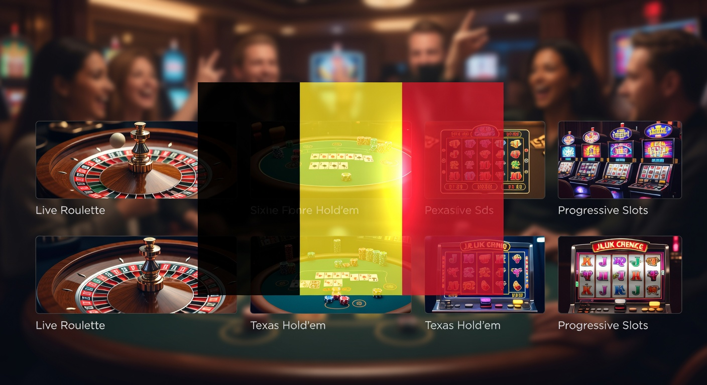
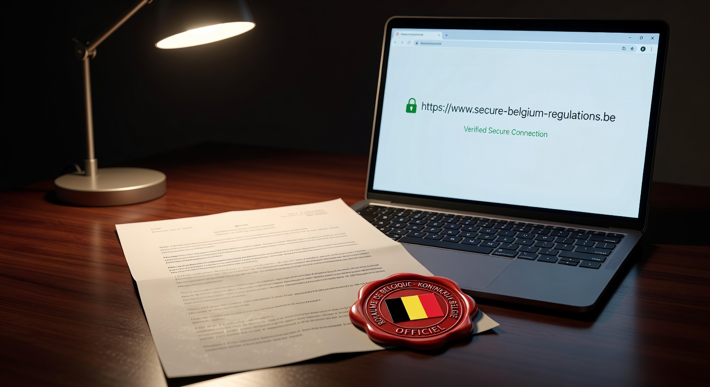
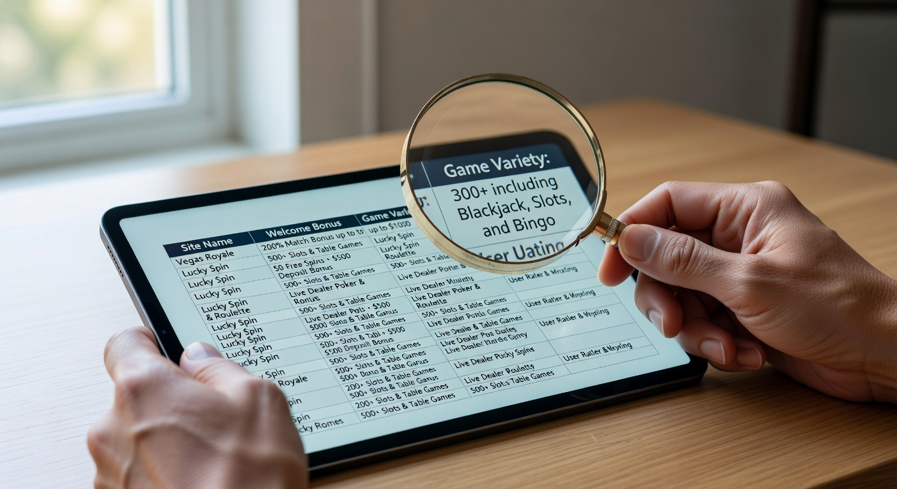
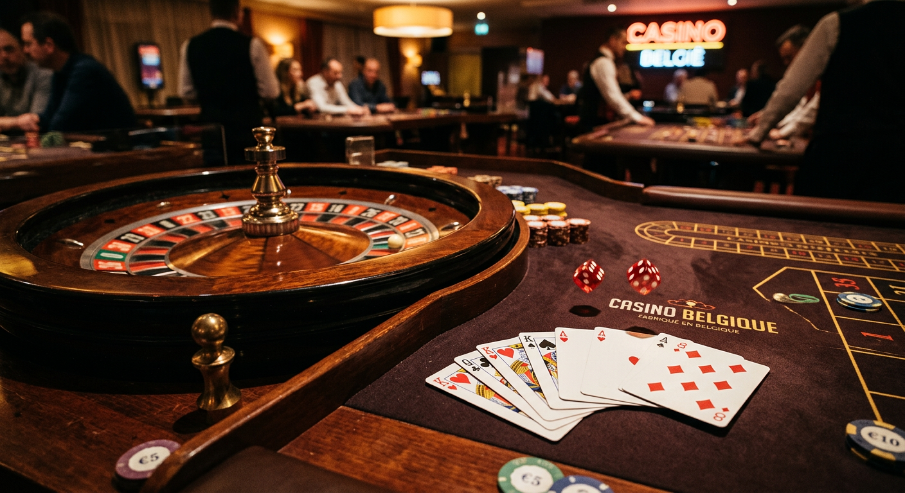
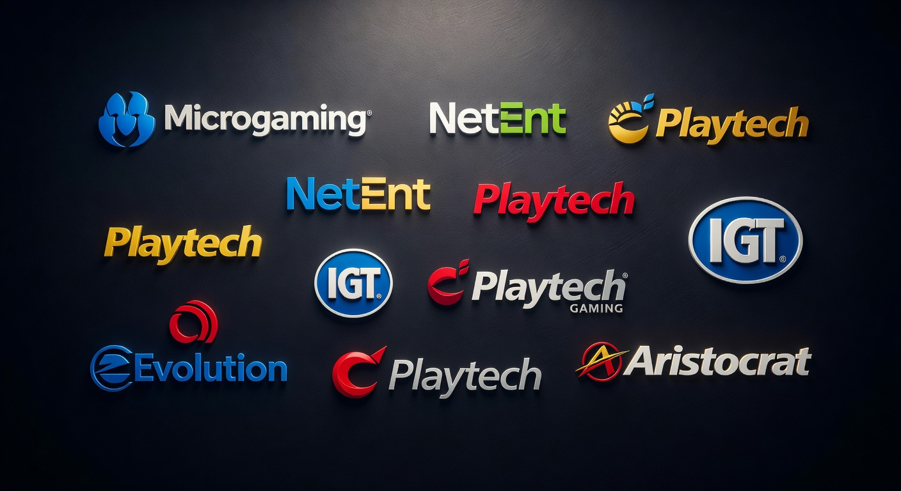

Beste belgische goksites: De complete gids voor 2026
Welkom bij de meest actuele en uitgebreide gids voor de Belgische kansspelmarkt in 2026. In een landschap dat voortdurend verandert door strikte regulering en technologische innovatie, is het essentieel om te weten waar je veilig en verantwoord kunt spelen. De beste belgische goksites onderscheiden zich dit jaar meer dan ooit door hun focus op gebruikerservaring en spelerbescherming.
Goldbet Casino
★★★★★ 5.0Welkomstbonus tot €500
Newlucky Casino
★★★★★ 4.8100% bonus op eerste storting
Dragobet Casino
★★★★★ 4.7Exclusieve bonus tot €1000
Fortunicabet Casino
★★★★★ 4.5200% bonus + 50 gratis spins
Spinorhino Casino
★★★★★ 4.4Welkomstbonus 150% tot €300
Lizaro Casino
★★★★★ 4.3100% tot €500 + 100 free spins
In dit artikel duiken we diep in de wereld van online entertainment. We kijken niet alleen naar de kwantiteit van het spelaanbod, maar vooral naar de kwaliteit van de dienstverlening. Of je nu een fan bent van klassieke tafelspellen of de nieuwste dice games, de zoektocht naar de beste belgische goksites begint bij een goed begrip van de lokale wetgeving en de beschikbare platformen.
De Belgische markt heeft in 2026 een volwassen status bereikt. De samenwerking tussen de overheid en aanbieders heeft geleid tot een omgeving waarin transparantie centraal staat. Voor de gemiddelde speler betekent dit dat de beste belgische goksites niet alleen de leukste spellen aanbieden, maar ook de meest betrouwbare omgeving voor financiële transacties en persoonlijke gegevens garanderen.
Introductie tot de gokmarkt in 2026
Het jaar 2026 markeert een belangrijk punt in de geschiedenis van online gokken in België. De markt is volledig gereguleerd en de wildgroei van illegale aanbieders is drastisch ingeperkt. De beste belgische goksites werken nu met geavanceerde AI-systemen om gokverslaving in een vroeg stadium te herkennen. Dit zorgt voor een veiligere speelomgeving voor iedereen.
Bovendien is de technologische integratie naar een hoger niveau getild. Spelers verwachten naadloze overgangen tussen mobiele apps en desktopversies. De beste belgische goksites hebben hier zwaar in geïnvesteerd, waardoor de laadtijden minimaal zijn en de grafische kwaliteit van de spellen indrukwekkend is, zelfs op oudere smartphones.
Wat ook opvalt in 2026 is de cross-border interesse. Hoewel de regels streng zijn, kijken veel Nederlandse spelers met bewondering naar het Belgische model. In Nederland is de KSA verantwoordelijk voor toezicht, en systemen zoals Cruks zijn daar de norm. Toch behouden de beste belgische goksites hun eigen unieke identiteit door een specifiek aanbod dat je nergens anders vindt.
Top 10 legale online goksites in België

Wanneer we kijken naar de huidige marktleiders, zien we een mix van gevestigde namen en innovatieve nieuwkomers. De lijst van de beste belgische goksites wordt aangevoerd door partijen die consequent hoog scoren op klanttevredenheid en technische stabiliteit. Hieronder volgt een overzicht van de top 10 aanbieders die momenteel de standaard zetten.
| Aanbieder | Licentietype | Belangrijkste Kenmerk | Beoordeling |
|---|---|---|---|
| Casino 777 | A+ | Grootste spelaanbod | 9.8/10 |
| Circus Casino | A+ / B+ | Beste loyaliteitsprogramma | 9.6/10 |
| Napoleongames | A+ | Exclusieve sportweddenschappen | 9.5/10 |
| Unibet | A+ / F+ | Gebruiksvriendelijke interface | 9.4/10 |
| Bwin | A+ | Live stream mogelijkheden | 9.2/10 |
| Ladbrokes | A+ / F+ | Sterke fysieke aanwezigheid | 9.0/10 |
| TonyBet | A+ | Snelle uitbetalingen | 8.9/10 |
| GoldenPalace | B+ | Specialist in dice games | 8.8/10 |
| Blitz | B+ | Focus op Belgische spelers | 8.7/10 |
| Bingoal | A+ / F+ | Uitstekende odds voor wielrennen | 8.6/10 |
Deze tabel is gebaseerd op uitgebreide tests uitgevoerd door onze experts in de eerste helft van 2026. Bij het selecteren van de beste belgische goksites hebben we gekeken naar factoren zoals de snelheid van de klantenservice, de eerlijkheid van de algemene voorwaarden en de variatie in het spelaanbod.
Onze criteria voor het testen van aanbieders
Om te bepalen welke platforms de titel van de beste belgische goksites verdienen, hanteren we een strikt protocol. Veiligheid staat bovenaan; we controleren altijd of de licentie van de Kansspelcommissie nog steeds geldig is. Daarnaast testen we de KYC (Know Your Customer) procedure om te zien of deze efficiënt maar grondig wordt uitgevoerd.
Een ander cruciaal aspect is de RTP (Return to Player) van de aangeboden spellen. De beste belgische goksites zijn transparant over hun uitbetalingspercentages. We verifiëren of de software wordt gecontroleerd door onafhankelijke instanties zoals eCOGRA of iTech Labs, zodat spelers weten dat ze een eerlijke kans hebben.
Het belang van de Kansspelcommissie
De Belgische Kansspelcommissie (KSC) is de waakhond die toeziet op alles wat met gokken te maken heeft. Zonder hun goedkeuring kan een aanbieder nooit tot de beste belgische goksites behoren. Zij zorgen ervoor dat de wetgeving strikt wordt nageleefd en treden hard op tegen partijen die de regels overtreden.
De rol van de KSC is in 2026 nog belangrijker geworden door de toename van digitale criminaliteit. Zij controleren niet alleen de spellen, maar ook de achterliggende IT-infrastructuur van de aanbieders. Dit geeft de speler de garantie dat hun geld en gegevens veilig zijn bij de beste belgische goksites.
Wetgeving en veiligheid: Wat je moet weten

Gokken in België is gebonden aan de Kansspelwet van 7 mei 1999, die sindsdien vele malen is geactualiseerd. In 2026 is de regelgeving een van de strengste ter wereld. Dit is gunstig voor de consument, want het kaf wordt van het koren gescheiden. Alleen de meest solvabele en ethische bedrijven kunnen de status van de beste belgische goksites behouden.
Een belangrijk onderdeel van de veiligheid is de bescherming tegen overmatig gokken. De overheid heeft de wekelijkse stortingslimieten in 2026 verder gestandaardiseerd. Spelers die bij de beste belgische goksites spelen, worden automatisch beschermd door deze limieten, tenzij ze expliciet bewijzen dat ze meer kunnen besteden zonder in de problemen te komen.
Hoewel veel spelers uit Nederland soms zoeken naar Online Casinos Zonder Cruks, is het essentieel om te begrijpen dat België een eigen, zeer effectief systeem heeft. De integratie tussen de verschillende registers zorgt ervoor dat probleemspelers overal worden herkend en beschermd, wat de integriteit van de beste belgische goksites alleen maar versterkt.
Verschil tussen A+, B+ en F+ licenties
In België werken we met een specifiek licentiesysteem. De beste belgische goksites hebben vaak een A+ licentie, wat betekent dat ze een online versie zijn van een fysiek casino (zoals dat in Spa of Namen). Deze sites mogen het volledige scala aan casinospellen aanbieden, inclusief slots en live dealer games.
B+ licenties zijn bedoeld voor speelautomatenhallen en bieden voornamelijk dice games en dice slots aan. Hoewel het aanbod iets beperkter is, behoren sommige van deze platformen absoluut tot de beste belgische goksites vanwege hun specialisatie en lokale charme. F+ licenties zijn specifiek gericht op sportweddenschappen.
Waarom je geen welkomstbonussen meer vindt
Sinds de wetswijzigingen van enkele jaren geleden zijn gratis bonussen en welkomstgeschenken verboden in België. De wetgever oordeelde dat deze bonussen aanzetten tot gokverslaving. De beste belgische goksites concurreren daarom niet langer op de hoogte van hun bonus, maar op de kwaliteit van hun platform en de snelheid van hun service.
Dit heeft de markt eerlijker gemaakt. In plaats van lokkertjes met ingewikkelde rondspeelvoorwaarden, bieden de beste belgische goksites nu transparante loyaliteitsprogramma's aan. Hierbij word je beloond voor je activiteit op een manier die niet aanzet tot onverantwoord speelgedrag, wat past binnen de visie van de KSC voor 2026.
De zoektocht naar de beste belgische goksites

Hoe vind je nu de aanbieder die het beste bij jou past? De zoektocht naar de beste belgische goksites begint bij het identificeren van je eigen voorkeuren. Ben je een high-roller die op zoek is naar exclusieve tafels, of speel je liever voor kleine bedragen op de nieuwste videoslots? Voor elk type speler is er een geschikt platform.
In 2026 maken veel spelers gebruik van vergelijkingssites om de beste belgische goksites te filteren op basis van gebruikerservaringen. Het is raadzaam om niet alleen naar de ratings te kijken, maar ook de kleine lettertjes te lezen. Een aanbieder die in onze lijst van de beste belgische goksites staat, zal altijd heldere voorwaarden hebben zonder verborgen addertjes onder het gras.
Vergeet ook niet de mobiele compatibiliteit te controleren. De meeste tijd wordt in 2026 doorgebracht op mobiele apparaten. De beste belgische goksites hebben applicaties die niet alleen functioneel zijn, maar ook biometrische beveiliging ondersteunen voor een extra laag veiligheid tijdens het inloggen en betalen.
Populaire spellen bij Belgische aanbieders

Het spelaanbod op de beste belgische goksites is in 2026 gevarieerder dan ooit. Terwijl klassiekers zoals Roulette en Blackjack hun populariteit behouden, zien we een enorme verschuiving naar interactieve en meeslepende ervaringen. Providers zoals Pragmatic Play blijven de markt domineren met hun hoogwaardige producties.
De beste belgische goksites werken samen met meerdere softwareleveranciers om een breed publiek aan te spreken. Dit betekent dat je op één platform zowel de grafisch prachtige slots van NetEnt kunt vinden als de innovatieve game shows van Evolution Gaming. De kwaliteit van de stream bij de beste belgische goksites is in 2026 standaard 4K, mits je verbinding dit toelaat.
Ook zien we een opmars van sociale spelelementen. Op de beste belgische goksites kun je steeds vaker deelnemen aan toernooien waarbij je het opneemt tegen andere spelers. Dit verhoogt de spanning zonder dat de inzet per se omhoog hoeft, wat bijdraagt aan een gezonde spelbeleving.
Dice games en dice slots: Een uniek Belgisch fenomeen
Nergens ter wereld zijn dice games zo populair als bij de beste belgische goksites. Dit genre, waarbij je dobbelstenen in rasters moet plaatsen om winnende combinaties te vormen, is diep geworteld in de Belgische gokcultuur. Het vereist een kleine mate van strategie, wat veel spelers aanspreekt.
In 2026 hebben dice slots zich verder ontwikkeld. Dit zijn videoslots waarbij de symbolen zijn vervangen door dobbelstenen. De beste belgische goksites bieden honderden varianten van deze spellen aan. Merken als Circus Casino hebben vaak exclusieve titels die je nergens anders kunt spelen, wat hun positie in de top van de markt verstevigt.
Live casino ervaringen vanuit de huiskamer
Het live casino segment is de afgelopen jaren geëxplodeerd. De beste belgische goksites bieden nu tafels aan met Nederlandstalige en Franstalige dealers. Dit zorgt voor een vertrouwde sfeer en maakt de drempel om een vraag te stellen lager. In 2026 is de interactie tussen speler en dealer via de chatfunctie nog soepeler geworden.
Bovendien bieden de beste belgische goksites nu 'Dual Play' tafels aan. Dit zijn fysieke tafels in echte casino's (zoals Casino 777's partnerlocaties) waar zowel mensen in het casino als online spelers tegelijkertijd aan kunnen deelnemen. Dit vervaagt de grens tussen de fysieke en digitale wereld volledig.
Vergelijking van softwareleveranciers

De kwaliteit van de beste belgische goksites wordt grotendeels bepaald door de software die ze gebruiken. In 2026 zien we dat een handvol leveranciers de standaard zet voor de hele industrie. Naast het eerder genoemde Pragmatic Play, zijn ook studio's als Play'n GO en Red Tiger onmisbaar op elk serieus platform.
Wanneer je speelt bij de beste belgische goksites, zul je merken dat de spellen niet alleen mooi zijn, maar ook technisch perfect draaien. De RTP wordt nauwkeurig gemonitord en de Random Number Generators (RNG) worden continu geaudit. Dit is een vereiste van de Belgische licentievoorwaarden en de beste belgische goksites nemen dit zeer serieus.
Interessant is dat we in 2026 ook meer kleine, onafhankelijke studio's zien verschijnen op de beste belgische goksites. Deze 'indie' ontwikkelaars brengen vaak frisse concepten naar de markt die afwijken van de standaard mechanismen. Dit houdt het aanbod voor de speler verrassend en dynamisch.
Mobiel gokken op de beste belgische goksites
In 2026 is mobiel gokken niet langer een extra optie, het is de primaire manier van spelen. De beste belgische goksites hebben hun platforms ontwikkeld volgens het 'mobile-first' principe. Dit betekent dat de interface perfect schaalt naar elk schermformaat en dat de navigatie intuïtief is met één hand.
De apps van de beste belgische goksites zijn geoptimaliseerd voor zowel iOS als Android. Ze maken gebruik van push-notificaties om spelers te herinneren aan hun ingestelde limieten of om updates te geven over nieuwe spellen. De beveiliging is top-notch, met integraties van systemen die we ook zien in de bankwereld.
Dankzij de uitrol van 6G-netwerken in sommige delen van België in 2026, is de stabiliteit van live casino streams op de beste belgische goksites ongeëvenaard. Je kunt nu onderweg deelnemen aan een potje Roulette zonder bang te hoeven zijn dat de verbinding wegvalt op een cruciaal moment.
Betalingsmethoden en registratie
Het proces van geld storten en opnemen is bij de beste belgische goksites in 2026 sneller en veiliger dan ooit tevoren. De focus ligt op lokale en vertrouwde methoden. In tegenstelling tot sommige internationale sites waar men vraagt om vage e-wallets uit Curaçao, houden de beste belgische goksites het bij bewezen Europese systemen.
Voor Nederlandse spelers die in België mogen spelen, is het interessant om te zien dat de beste belgische goksites vaak ook iDEAL ondersteunen voor grensoverschrijdende transacties, al blijft Bancontact de koning in België. Transparantie over kosten en verwerkingstijden is een kenmerk van alle aanbieders die wij als de beste belgische goksites beschouwen.
Het registratieproces is in 2026 bijna volledig geautomatiseerd. De beste belgische goksites maken gebruik van overheidsdatabases om je identiteit direct te verifiëren. Dit voorkomt dat minderjarigen kunnen spelen en zorgt ervoor dat je als legitieme speler binnen enkele minuten aan de slag kunt.
Snel en veilig storten met Bancontact
Bancontact blijft de meest gebruikte betaalmethode op de beste belgische goksites. Het is direct, veilig en direct gekoppeld aan je eigen bankrekening. In 2026 ondersteunen de meeste van de beste belgische goksites ook de Bancontact-app, waardoor je betalingen kunt bevestigen met je vingerafdruk of gezichtsherkenning.
Een ander voordeel van Bancontact bij de beste belgische goksites is dat er zelden transactiekosten aan verbonden zijn. De aanbieders nemen deze kosten voor hun rekening om de drempel voor de speler zo laag mogelijk te houden. Dit is een van de redenen waarom deze methode zo dominant blijft in de Belgische markt.
De voordelen van inloggen via Itsme
De integratie van Itsme is een revolutie geweest voor de beste belgische goksites. Met deze app kun je je identiteit verifiëren zonder dat je paspoortkopieën hoeft te mailen. De beste belgische goksites gebruiken Itsme om direct te voldoen aan de strenge KYC-eisen van de overheid.
Dit proces verhoogt de veiligheid aanzienlijk. Omdat je account gekoppeld is aan je digitale identiteit, is het voor fraudeurs vrijwel onmogelijk om een account te hacken op de beste belgische goksites. Het gemak van één druk op de knop om in te loggen draagt bij aan de premium ervaring die de beste belgische goksites hun klanten willen bieden.
Wat maakt de beste belgische goksites uniek?
Wat de beste belgische goksites echt onderscheidt van de rest van de wereld, is de balans tussen entertainment en ethiek. In veel andere jurisdicties, zoals Malta, is de regelgeving soms minder strikt op het gebied van actieve spelersinterventie. In België is dit een integraal onderdeel van de bedrijfsvoering.
De beste belgische goksites hebben een 'zorgplicht'. Dit betekent dat ze niet alleen passief toekijken, maar actief contact opnemen met spelers wiens gedrag wijst op risicovol gokken. In 2026 is deze persoonlijke benadering, ondersteund door data, wat een platform tot een van de beste belgische goksites maakt.
Daarnaast is de lokale focus uniek. De beste belgische goksites begrijpen de nuances tussen Vlaanderen en Wallonië. Ze bieden content aan die relevant is voor de lokale markt, zoals weddenschappen op lokaal voetbal of wielrennen, wat je minder snel zult vinden bij een algemeen internationaal casino.
KYC en verificatieprocedures
Hoewel sommige spelers de KYC-procedures als omslachtig ervaren, zijn ze bij de beste belgische goksites in 2026 gestroomlijnder dan ooit. Het doel is simpel: weten wie je bent om witwassen te voorkomen en minderjarigen te beschermen. De beste belgische goksites voeren deze controles vaak al uit bij de eerste storting.
In Nederland wordt vaak DigiD gebruikt voor vergelijkbare doeleinden bij partijen als Kansino of Fair Play Casino. In België is de koppeling met het Rijksregisternummer de standaard. De beste belgische goksites verwerken deze data volgens de strengste AVG-normen, waardoor je privacy gewaarborgd blijft.
Wanneer een speler een grote winst laat uitbetalen, kan er een extra verificatieronde plaatsvinden. De beste belgische goksites communiceren hierover heel helder en vragen alleen de strikt noodzakelijke documenten. De verwerkingstijd bij de beste belgische goksites is in 2026 vaak minder dan 24 uur, wat een enorme verbetering is ten opzichte van voorgaande jaren.
Klantenservice en ondersteuning
Een cruciaal aspect van de beste belgische goksites is de kwaliteit van hun klantenservice. In 2026 verwachten spelers 24/7 ondersteuning via verschillende kanalen. De beste belgische goksites bieden live chat, e-mail en vaak ook telefonische ondersteuning in meerdere talen.
We hebben gemerkt dat de beste belgische goksites investeren in hoogopgeleid personeel. In plaats van standaard antwoorden, krijg je op de beste belgische goksites hulp van mensen die echt begrijpen hoe de spellen en de regelgeving werken. Dit bouwt vertrouwen op, wat de belangrijkste valuta is in de online gokwereld.
Bovendien bieden de beste belgische goksites uitgebreide FAQ-secties aan waar spelers antwoorden kunnen vinden op de meest voorkomende vragen over uitbetalingen, technische problemen en spelregels. Een goed geïnformeerde speler is een tevreden speler, en dat begrijpen de beste belgische goksites als geen ander.
Verantwoord spelen en bescherming
Verantwoord spelen is de hoeksteen van de beste belgische goksites in 2026. Het is niet langer een bijzaak, maar een kernwaarde. De beste belgische goksites bieden tools aan waarmee spelers zelf hun speelgedrag kunnen monitoren. Denk aan realiteitschecks die elk uur verschijnen om je te laten weten hoe lang je al speelt.
Daarnaast werken de beste belgische goksites nauw samen met hulporganisaties. Als een speler aangeeft een pauze nodig te hebben, wordt dit direct gerespecteerd over alle platformen heen die onder dezelfde licentie vallen. Dit niveau van verantwoordelijkheid is wat de beste belgische goksites scheidt van de minder betrouwbare aanbieders.
In 2026 zien we ook dat de beste belgische goksites gebruik maken van 'loss limits'. Hierbij kun je instellen dat je per dag, week of maand niet meer dan een bepaald bedrag kunt verliezen. Zodra deze grens bereikt is, blokkeert het platform verdere inzetten. Dit is een essentiële functie bij alle beste belgische goksites.
De rol van het EPIS-systeem
Het EPIS (Excluded Persons Information System) is het Belgische register voor uitgesloten spelers. De beste belgische goksites zijn verplicht om elke speler bij inloggen te controleren tegen deze database. In 2026 is de uitwisseling van gegevens tussen de KSC en de beste belgische goksites real-time.
Dit systeem is zeer effectief. Mensen die zichzelf hebben uitgesloten, of die door de rechtbank zijn uitgesloten (bijvoorbeeld vanwege schulden), krijgen geen toegang tot de beste belgische goksites. Dit beschermt de meest kwetsbare leden van de samenleving en houdt de industrie gezond. Het is de Belgische tegenhanger van wat in Nederland bekend staat onder de KSA-vlag bij partijen als Jack’s Casino Online.
Tips voor het instellen van limieten
Wanneer je begint bij een van de beste belgische goksites, raden we aan om direct je limieten in te stellen. Begin met een stortingslimiet die past bij je vrije budget. De beste belgische goksites maken het heel eenvoudig om deze limieten te verlagen, maar voor een verhoging geldt altijd een wettelijke afkoelperiode.
Nog een tip: stel ook tijdslimieten in. Het is makkelijk om de tijd te vergeten als je plezier hebt op een van de beste belgische goksites. Door een limiet van bijvoorbeeld twee uur per dag in te stellen, zorg je ervoor dat gokken een leuke hobby blijft en geen obsessie wordt. De beste belgische goksites zullen je hierbij ondersteunen met automatische notificaties.
Internationale alternatieven en de KSA
Hoewel de beste belgische goksites uitmuntend zijn, kijken sommige spelers ook over de grens. In Nederland is de markt eveneens strak gereguleerd. Grote namen als ComeOn! Casino en TonyBet zijn in beide landen actief, maar moeten voldoen aan verschillende sets regels. De Belgische markt is echter uniek door de sterke focus op dice games.
Internationale spelers moeten opletten dat ze alleen spelen bij sites die over de juiste papieren beschikken. Een casino met een licentie uit Malta is voor veel Europeanen een veilige keuze, maar voor inwoners van België bieden de beste belgische goksites met een lokale licentie de allerbeste bescherming en juridische zekerheid.
De samenwerking tussen de Belgische overheid en andere Europese toezichthouders zorgt ervoor dat malafide aanbieders sneller worden geblokkeerd. Dit versterkt de positie van de beste belgische goksites, aangezien spelers steeds vaker kiezen voor de zekerheid van een legaal en gecontroleerd platform.
De toekomst van de beste belgische goksites
Kijkend naar de rest van 2026 en verder, verwachten we dat de beste belgische goksites nog meer gebruik gaan maken van Virtual Reality (VR). Stel je voor dat je door een virtuele versie van het casino van Namen loopt, terwijl je gewoon op je bank zit. Enkele van de beste belgische goksites zijn hier al mee aan het experimenteren.
Ook zal de personalisatie verder toenemen. De beste belgische goksites zullen hun interface aanpassen aan jouw voorkeuren. Als je nooit sportweddenschappen plaatst, zal het platform die sectie minder prominent tonen. Dit maakt de ervaring op de beste belgische goksites efficiënter en aangenamer.
Tot slot zal de integratie van blockchain-technologie voor meer transparantie zorgen in de spelgeschiedenis. Hoewel de beste belgische goksites al zeer transparant zijn, biedt blockchain een onveranderlijk logboek van alle transacties en speluitkomsten, wat het vertrouwen van de consument alleen maar verder zal vergroten.
Veelgestelde vragen over gokken in België
Zijn winsten bij de beste belgische goksites belastvrij?
Ja, voor de individuele speler zijn de winsten bij legale Belgische aanbieders in principe belastingvrij, aangezien de casino's zelf al kansspelbelasting afdragen over hun inkomsten.
Kan ik met PayPal betalen bij de beste belgische goksites?
Veel van de beste belgische goksites ondersteunen PayPal als betaalmethode, samen met andere opties zoals Skrill, Visa en Mastercard. Het aanbod varieert per aanbieder.
Wat moet ik doen als ik een klacht heb over een van de beste belgische goksites?
In eerste instantie moet je proberen het op te lossen met de klantenservice van de aanbieder. Als dat niet lukt, kun je contact opnemen met de Kansspelcommissie, die als bemiddelaar kan optreden.
Bieden de beste belgische goksites ook sportweddenschappen aan?
Zeker, veel aanbieders in onze top 10 hebben zowel een casino- als een sportsbookgedeelte onder hun licenties vallen, waardoor je met één account op beide kunt spelen.
Conclusie: Kies voor zekerheid en kwaliteit
De wereld van online gokken in 2026 biedt meer mogelijkheden dan ooit, maar brengt ook verantwoordelijkheden met zich mee. Door te kiezen voor de beste belgische goksites, verzeker je jezelf van een eerlijke behandeling, snelle uitbetalingen en een veilige omgeving. De strikte regulering in België is er voor jouw bescherming.
Of je nu geniet van een strategisch spelletje dice of de spanning van de live roulette tafel, de beste belgische goksites staan garant voor topentertainment. We raden je aan om altijd je grenzen te kennen en te spelen voor het plezier. De markt is in 2026 volwassener en veiliger dan ooit, wat de weg vrijmaakt voor een positieve spelervaring voor iedereen.
Blijf onze site volgen voor de laatste updates en diepgaande reviews van de beste belgische goksites. We blijven de markt monitoren om te garanderen dat onze aanbevelingen altijd gebaseerd zijn op de meest recente data en de hoogste standaarden van integriteit. Veel succes en speel bewust!
Voor meer informatie over veilig gokken en officiële regelgeving, kun je terecht op de website van de Belgische Kansspelcommissie of meer lezen over kansspelwetgeving op Wikipedia. Ook internationale bronnen zoals de Malta Gaming Authority bieden waardevolle inzichten in Europese standaarden.

Digitale marketeer en contentspecialist met ruim 7 jaar ervaring.